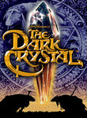
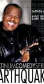
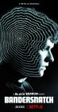
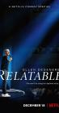
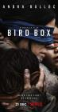

What is this site?
Stephen's Profile
Browser Extension
Stephen Klancher
Recent
Overall
Year Overview
Series
Lists
Recent Movies
Michael Che Matters (2016)
Stephen Klancher
:
April 24, 2019
Nate Bargatze: The Tennessee Kid (2019)
Stephen Klancher
:
April 16, 2019
Captain Marvel (2019)
Releases on 2019-03-08
Stephen Klancher
:
March 30, 2019

The Dark Crystal (1982)
Releases on 1982-12-17
Stephen Klancher
:
March 23, 2019
BlacKkKlansman (2018)
Releases on 2018-08-10
Stephen Klancher
:
March 1, 2019

Earthquake: About Got Damm Time (2005)
Stephen Klancher
:
January 26, 2019

Black Mirror: Bandersnatch (2018)
Stephen Klancher
:
January 19, 2019

Ellen DeGeneres: Relatable (2018)
Stephen Klancher
:
January 12, 2019

Bird Box (2018)
Stephen Klancher
:
January 11, 2019
Avengers: Infinity War (2018)
Releases on 2018-05-04
Stephen Klancher
:
January 5, 2019
Recent Episodes
berkman > block (2019)
Airs on 2019-05-19
S2 - E8 of
Barry
Stephen Klancher
:
May 24, 2019
The Audition
Airs on 2019-05-12
S2 - E7 of
Barry
Stephen Klancher
:
May 24, 2019
The Truth Has a Ring to It
Airs on 2019-05-05
S2 - E6 of
Barry
Stephen Klancher
:
May 24, 2019
ronny/lily
Airs on 2019-04-28
S2 - E5 of
Barry
Stephen Klancher
:
May 23, 2019
What?!
Airs on 2019-04-21
S2 - E4 of
Barry
Stephen Klancher
:
May 23, 2019
Past = Present x Future Over Yesterday
Airs on 2019-04-14
S2 - E3 of
Barry
Stephen Klancher
:
May 22, 2019
The Power of No
Airs on 2019-04-07
S2 - E2 of
Barry
Stephen Klancher
:
May 22, 2019
The Show Must Go On, Probably? (2019)
Airs on 2019-03-31
S2 - E1 of
Barry
Stephen Klancher
:
May 22, 2019
Veep
Airs on 2019-05-12
S7 - E7 of
Veep
Stephen Klancher
:
May 21, 2019
Oslo
Airs on 2019-05-05
S7 - E6 of
Veep
Stephen Klancher
:
May 21, 2019